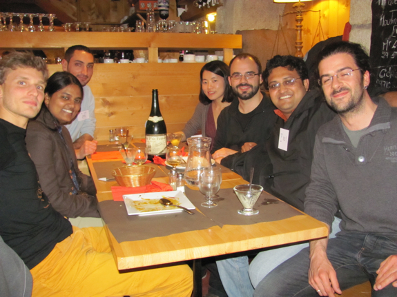
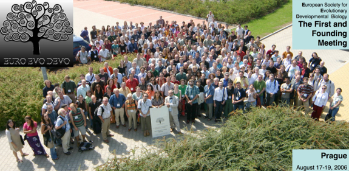

PREVIOUS & CURRENT LABS
Vinod Saranathan lab Department of Biological Sciences National University of Singapore, Singapore
Abderrahman Khila lab Institut de Génomique Fonctionnelle de Lyon Ecole Normale Supérieure de Lyon, France
Bénédicte Sanson lab Department of Physiology, Development and Neuroscience University of Cambridge, UK
Équipe Évolution et développement de la fleur Laboratoire de Reproduction et Développement des Plantes École Normale Supérieure de Lyon, France
Martin Lascoux lab Evolutionary Biology Centre Uppsala Universitet, Sweden
Laurent Keller lab Département d'Écologie et Évolution Université de Lausanne, Switzerland
COLLABORATORS
Henry Chung (Michigan State University, USA)
Antónia Monteiro (National University of Singapore, Singapore)
Ferdinand Marlétaz (OIST, Japan)
LOVELY FLIES...
- FlyBase
- DGRC
- Bloomington
- Arizona genomics Institute (BAC/EST resources)
- The National Drosophila Stock Center
- Ehime-Fly
- FlyTree
- TaxoDros
A pinch of art... Michele Banks, Drosophila Wing C (2018)
John Knuth, Fly Paintings Series (2013) -video-
WATER STRIDERS...
Piotr Jablonski lab (Seoul National University, South Korea)
Locke Rowe lab (University of Toronto, Canada)
A pinch of art... Left: Vincent Van Gogh, Starry Night (1889). Right: The hydrodynamics of water strider locomotion, Lu et al. (2003).
Ruud Streefkerk, Common water strider (2015)
Sebastian Varghese, Water Striders (2015)
Adrija Ghosh, Are you an insect? (Published by Pratham Books)

BUTTERFLY STRUCTURAL COLOURS...
Nipam Patel lab (Marine Biological Laboratory, USA)
Arnaud Martin lab (Columbian College of Arts & Sciences, USA)
A pinch of art... Michelle Banks, Mutant Butterfly: Agraulis 2 (2018).
DISPATCHES...
Khila lab (2017). First row from left: David Armisén, Amélie Decaras, William Toubiana, Emília Santos; second row: Charlotte Bouleau, Séverine Viala, Cédric Finet, Mohammed Rabie, Antonin Crumière, Aidamalia Vargas-Lowman, Augustin Le Bouquin, Pauline Joncour; third row: François Bonneton, Abdou Khila.

Souvenir from Roscoff (CJM "Emergence and evolution of developmental patterns", April 2012). Left row from back: Nicolas Denans, Priti Roy, Cédric Finet; right row from back: Qiyan Mao, David Caballero Vila, Ayan Ray, Flavien Caraguel.
 The First and Founding Meeting of the European Society for Evolutionary Developmental Biology (Prague, Czech Republic) - 2006 -
